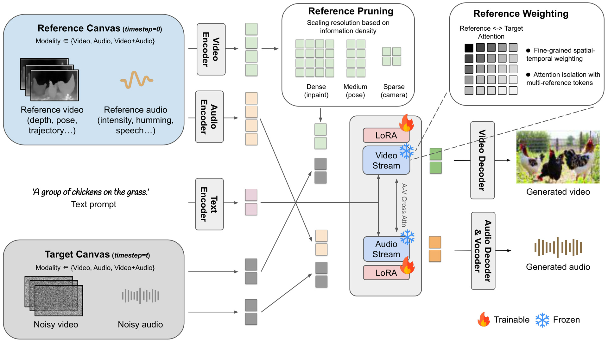
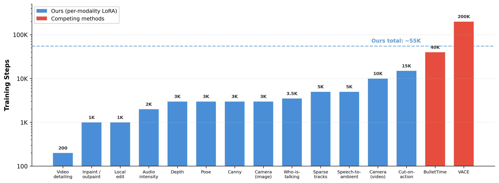

Controlling video and audio generation requires diverse modalities — from depth and pose to camera trajectories and audio transformations — yet existing approaches either train a single monolithic model for a fixed set of controls or introduce costly architectural changes for each new modality.
We introduce AVControl, a lightweight, extendable framework where each control modality is trained as a separate LoRA on a parallel canvas (a reference signal provided as additional tokens in the attention layers), requiring no architectural changes beyond the LoRA adapters themselves. We show that simply extending image-based in-context methods to video via channel concatenation fails for structural control, and that our parallel canvas approach resolves this.
On the VACE Benchmark, we outperform all evaluated baselines on depth- and pose-guided generation, inpainting, and outpainting. The framework supports a diverse set of independently trained modalities: spatially-aligned controls (depth, pose, edges), camera trajectory with intrinsics, sparse motion control, video editing, and audio-visual applications. Most modalities converge within a few thousand optimization steps on small datasets.

AVControl places the reference control signal on a parallel canvas — as additional tokens processed alongside the generation target in the model's self-attention layers. The only trainable component is a lightweight LoRA adapter; the audio-visual backbone remains entirely frozen. Each control modality is trained as its own independent LoRA, keeping individual runs small and focused.

Each LoRA trains in as few as 200 to at most 15,000 steps, on small datasets ranging from a few hundred to a few thousand samples. The total budget across all modalities is roughly 55,000 steps — less than one third of a single VACE training run (200K steps).
Depth, pose, and edge maps each guide the generation through their own independently trained LoRA. The outputs faithfully follow the spatial structure while maintaining natural motion and visual quality.
Because reference and target interact through self-attention, we can continuously modulate control strength at inference time. This is impossible with channel-concatenation methods.
Input with Mask → Inpainted Result
Input with Mask → Inpainted Result
Cropped Input → Outpainted Result
Cropped Input → Outpainted Result
Original → Edited Output
Original → Edited Output
Low-res Input → Detailed Output
Crop comparison
From a single image, we generate video with a specified camera motion. The desired trajectory is encoded as a warped grid on the reference canvas.
Camera Grid → Generated Output
Camera Grid → Generated Output
Trajectory 1
Trajectory 2
Trajectory 3
Trajectory 4
Given an existing video, we estimate its full camera parameters and re-render the scene at a new trajectory while preserving the original scene dynamics.
Source
Trajectory 1
Trajectory 2
Trajectory 3
Point tracks are rendered as colored dots on a black canvas. The LoRA generates a video that follows these trajectories, enabling fine-grained control over object motion.
Track Dots → Generated Output
Track Dots → Generated Output
Tracks 1
Tracks 2
Tracks 3
Tracks 4
Re-render a scene from a substantially different viewpoint while preserving the action and timing.
Source Angle
Generated New Angle
Source Angle
New Angle 1
New Angle 2
New Angle 3
The following examples contain audio — please turn on your speakers.
Audio intensity control generates audio whose temporal dynamics follow the visual content. The waveform below shows how the generated audio energy tracks the on-screen action.
RMS Envelope Over Time
Embed clean speech within ambient sounds matching a described scene.
Condition — Clean Speech
Output — Ambient Audio
Generate multi-person talking video with synchronized lip motion from an abstract layout of colored bounding boxes indicating who speaks when.
Bounding Boxes → Generated Output
Bounding Boxes → Generated Output
| Benchmark | Task | Key Metric | Δ vs. Best Baseline |
|---|---|---|---|
| VACE Benchmark | Depth / Pose / Inpaint / Outpaint | VBench Avg | +2.3 to +3.8 vs. VACE — best on all 4 tasks |
| ReCamMaster | Camera trajectory | CLIP-F 99.13% | +0.39 vs. ReCamMaster (98.74%) |
| VGGSound | Audio intensity | IS 34.51 | Best among all methods |
| HDTF | Who-is-talking | E-FID 0.18 | Best E-FID and FID (12.31) |
@article{benyosef2025avcontrol,
title = {AVControl: Efficient Controls for Audio-Visual Generation},
author = {Ben-Yosef, Matan and Halperin, Tavi and Ken Korem, Naomi and Salama, Mohammad and Cain, Harel and Joseph, Asaf and Chen, Anthony and Jelercic, Urska and Bibi, Ofir},
year = {2026},
}